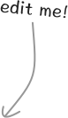

Good day, traveler. Today you embark upon a journey into Quil. May your sight be keen, for there are sights to behold.
If you're new to the realms of Clojure, click here to start from scratch. →
This is a tutorial for Quil, a visual programming system that combines the powers of ClojureScript and Processing.js.
A Quil program is called a sketch. A sketch can be a simple drawing, but it can also be a rich animation or an interactive visualization.
Each sketch is powered by a draw function, which renders shapes and colors on the screen.
You'll find many sketches in this tutorial. All of them are "live" — change the code and you should immediately see the sketch change. Hover over a Quil function name to see what it does.
A Taste of Quil
These first few sketches will give you a taste of things to come. They are presented without much explanation. We'll dive into the details later. Play around with them, there's nothing you can break. Should you happen to make a mess, simply hit the red "revert" button, and you'll get the original code back.
The Pine Forest
The road to Quil starts in the Pine Forest. Try changing some numbers and see what happens!
That's already a lovely pattern we've got going. Knit it into a turtleneck and aunt Juliet will envy you forever. But there's more. How about we get things moving?
The Carousel
Time to make your head spin! This is an example of an animation. Think of it like an old fashioned film projector, spinning through a sequence of images. Quil calls your draw function many times in rapid succession to draw the individual images, called frames.
Quil keeps a count of how many frames have passed. This sketch uses that frame-count to determine the position of the circle.
Paint Blotches
Quil also lets you make interactive sketches. Move your mouse over the canvas to smear it with thick blotches of paint that run down the screen.
This is an example of a sketch that has state. This means that how it looks depends on its history, in this case, the past positions of the mouse.
Creating a sketch
To get Quil to draw something on the screen, you need a :draw function. You pass this function on to Quil when you call (sketch ...). Quil accepts other functions as well, like a :setup function, which is called once when your sketch starts to run.
The :host is the HTML id of the canvas element, which is where Quil will draw your sketch. In this tutorial, all the canvases are already set up for you, so no need to worry about that.
The Quil API
Inside the :draw function you have access to a long list of functions provided by Quil. Keep the Quil API reference close to you at all times. Hang it above your bed, keep it under your pillow. It's a magical toolbox providing endless opportunities for your creations.
Drawing shapes
When you draw a shape, it stays on the canvas until you draw something on top of it. You can see this well in the last example, where the new "paint" is drawn on top of the old..
With (background ...) you can get it a clean slate, since it will refill the whole canvas with a solid color. You can use it in your draw function to clear the canvas before drawing the new frame.
One of the easiest things you can draw is a rectangle. Quil's rect function takes four parameters, x, y, width and height. The first two arguments represent the location of the top left corner of rectangle on the canvas. Remember that in Quil, as in computer graphics in general, the origin (0, 0) of the coordinate system represents the top left corner of the drawing surface. In this example, we're drawing a centered equilateral rectangle or square.
By default Quil draws shapes with a light gray fill color, and a thin black border, on a dark gray background. Unless normcore becomes even more... norm, this color scheme won't win many prizes.
To spice things up let's add some color! We already talked about background, which is really a lot like a draw function in its own right, since it refills the whole canvas. Shapes like rectangles or triangles on the other hand depend on a fill color, and a stroke. The stroke has a color and a stroke-weight, the width of the stroke in pixels.
By default all colors are specified in the RGB color space, meaning red - green - blue, with values between 0 and 255. Try and see how the colors change as you modify the three numbers!
Drawing a circle isn't any harder. While Quil does not come with a special function for drawing circles, it supplies a function for the general case of drawing ovals (or ellipses). That will work well — after all, a circle is just an ellipse that is as high as it is wide.
The ellipse function takes the same arguments as rect: x, y, width and height. However, whereas in the case of rect the point (x,y) reprents the top-left corner of the figure, in ellipse it represents its center. This decision of Quil's authors makes sense: an ellipse doesn't have corners.
Animation and State
Drawing shapes is good, but making them move is better!
Slider
There are a few different ways you can create animations in Quil. You already saw the Carrousel example above, which used the current (frame-count) and based the rendering of each frame on that.
You can change the frame rate, the number of frames Quil renders per second, with (frame-rate n). This will change the speed of animations based on frame-count.
Another approach is the use the current time in miliseconds, this way we have a way to measure passing time independent of the the current frame rate. Quil provides the handy (milis) function for that.
In this next example we use (milis) to calculate a horizontal position. With Clojure's mod function (modulo, in other words the remainder after division), we let the animation wrap around again.
Hyper
This next sketch is an adaptation of a sketch by by Erik Svedäng.
This is an example of a sketch that uses state. The initial state is returned by setup And update-state continually updates that state, in this case growing the radius, or changing the color. Draw in turn can then use that state.
Advanced Examples
These examples are taken from the Quil site. Can you find out how they work?
Tailspin by Erik Svedäng
Tailspin by Erik Svedäng on Quil.info
Dry Paint by Erik Svedäng
Dry Paint by Erik Svedäng on Quil.info
About Us
This interactive tutorial was created in a weekend by BERLIN!! for ClojureCup 2015.
We are Arne Brasseur, Chelsey Mitchell, Jelle Akkerman, and Paulus Esterhazy.
All code is available under the Eclipe Public License and can be found on Github. Tutorial text and code samples are available under Creative Commons-Attribution-Share Alike 4.0. Quil examples taken from the Quil site are © their respective authors, and are EPL like the Quil site.